Manual Portal SALA Docente
De Wikibosqueusuarios
{kind=link}
[Inicio] Opciones Usuario
- En el recuadro izquierdo encontrará información referente al usuario, periodo activo y todas las opciones disponibles que puede consultar.
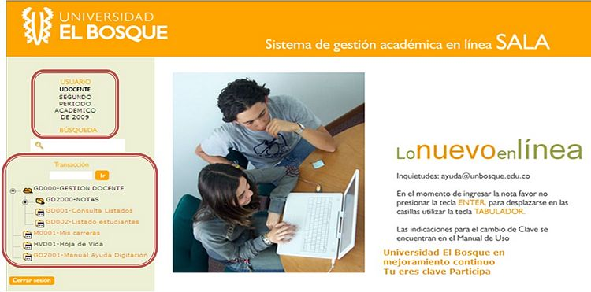
[Inicio] Digitación
- Ingrese a la opción Digitación y seleccione el código del grupo al que digitará las notas respectivas a cada corte.
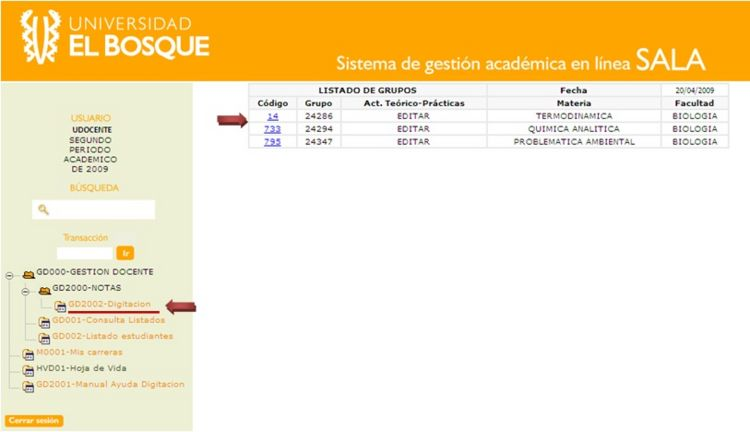
- Ingrese la nota con un entero punto un decimal (5.0) en la casilla correspondiente al corte y estudiante, para desplazarse a la siguiente casilla debe hacerlo únicamente por medio de la tecla TABULADOR 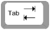, ingrese el número de actividades teóricas y prácticas por corte, finalice con el botón Guardar Cambios.
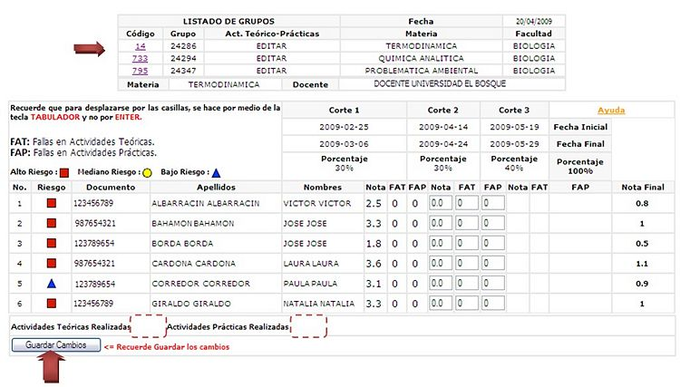
[Inicio] Consulta Listados
- Seleccione la opción Consulta Listados, el código del grupo que desea consultar, el tipo de listado a generar, el número de corte y seleccione el botón consultar para generar el listado.
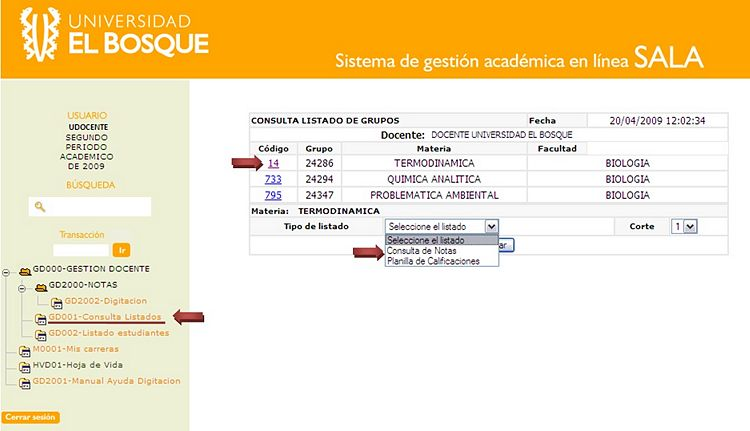
- [Inicio]Consulta de Notas
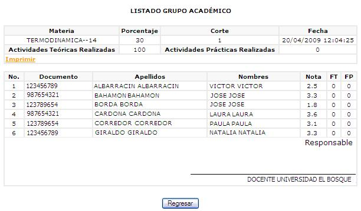
- Planilla de Calificaciones
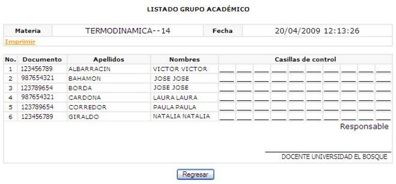
[Inicio] Listado Estudiantes
- Seleccione la opción Listado estudiantes y el nombre de la materia para consultar el listado de los estudiantes por horario según la materia seleccionada.
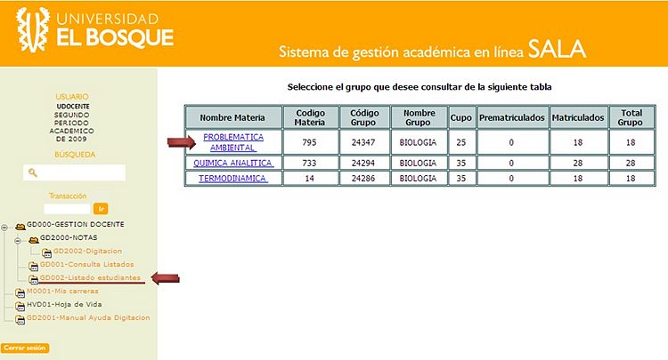
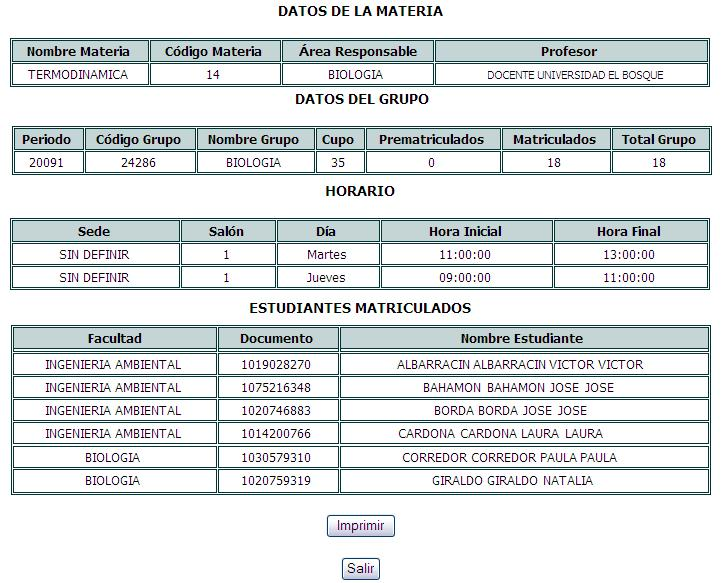
[Inicio] Hojas de Vida
- Seleccione la opción Hojas de vida para ingresar la información referente a sus datos personales, formación académica, experiencia laboral, reconocimientos, cursos, idiomas, entre otros.

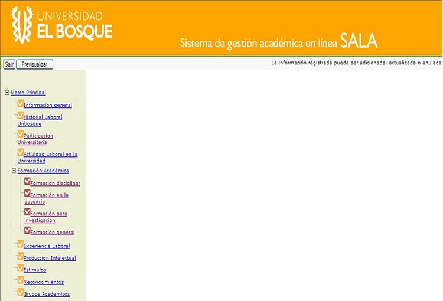
[Inicio] Información General
- Al seleccionar la opción Información General, se presenta un formulario con la información general docente que se debe diligenciar, los campos marcados con asterisco (*), es obligatorio suministrarlos. Al seleccionar el icono encontrara información de ayuda.
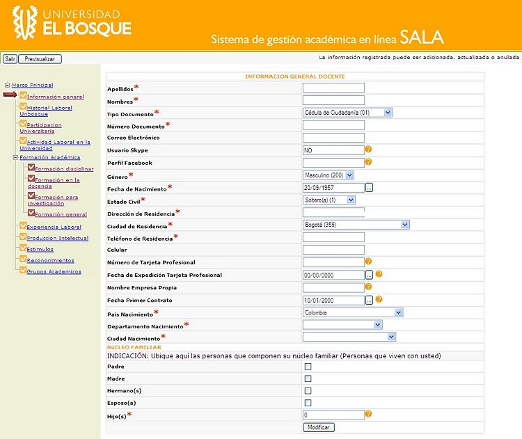
[Inicio] Historia Laboral Unbosque
- Al seleccionar la opción Historia Laboral Unbosque, se presenta un formulario a nivel informativo de los diferentes contratos docentes efectuados con la universidad.
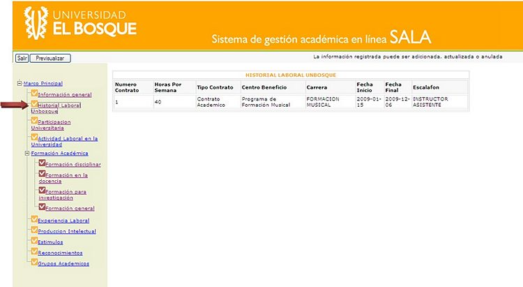
[Inicio] Participación Universitaria
- Al seleccionar el aspecto Participación Universitaria, y escoger el tipo de participación, podrá registrar las diferentes actividades Culturales, Deportivas, Salud, Gobierno Universitario, en las cuales participa dentro de la Universidad.
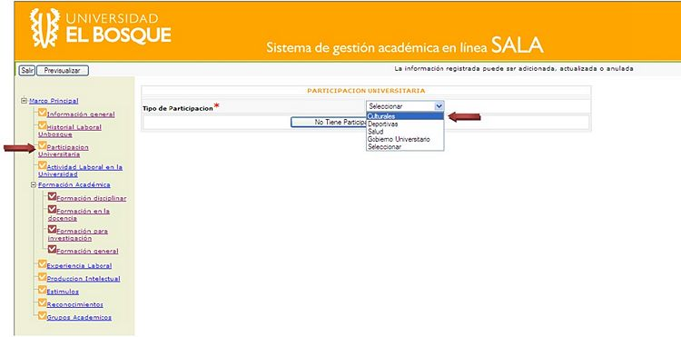
- Al seleccionar tipo de participación, se presenta un formulario que se debe diligenciar según el caso, los campos marcados con asterisco (*), es obligatorio suministrarlos, registrada la información seleccionar el botón Modificar.
[Inicio] Culturales
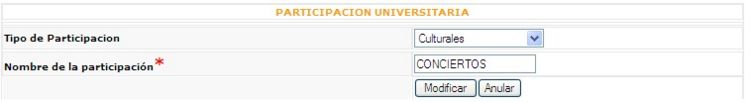
[Inicio] Deportivas
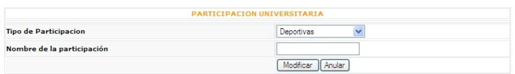
[Inicio] Salud
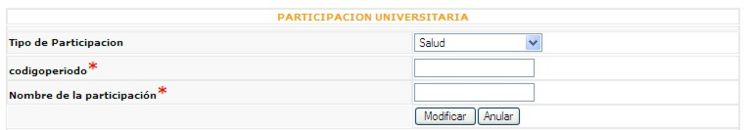
[Inicio] Gobierno Universitario
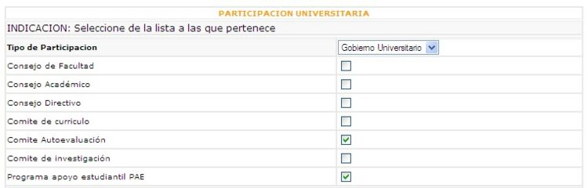
- Si no participa en ninguna de las actividades, seleccione el botón 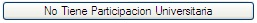
{kind=link}
[Inicio] Actividad Laboral en la Universidad
- Al seleccionar la opción Actividad Laboral en la Universidad , y escoger el tipo de Actividad, podrá registrar las diferentes actividades laborales académicas Docencia, Investigación, Proyección social, Atención y tutorías, Administración Académica y Otras asignaciones en las cuales labore dentro de la Universidad.
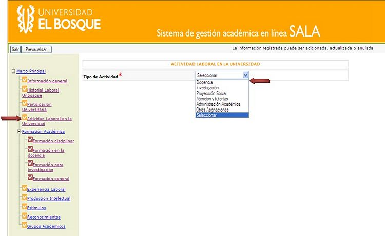
- Al seleccionar tipo de actividad Docencia, se presenta un formulario que se debe diligenciar, los campos marcados con asterisco (*), es obligatorio suministrarlos, en los campos carrera y materia, se presenta una lista de la cual puede escoger la carrera o materia, registrada la información seleccionar el botón enviar.
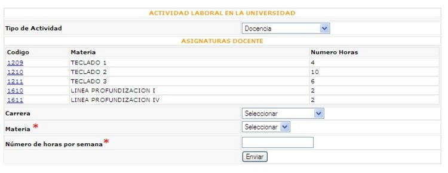
- Al seleccionar tipo de actividad Investigación, se presenta un formulario que se debe diligenciar, los campos marcados con asterisco (*), es obligatorio suministrarlos, en el campo facultad, se presenta una lista de la cual puede escoger la misma, registrada la información seleccionar el botón enviar.
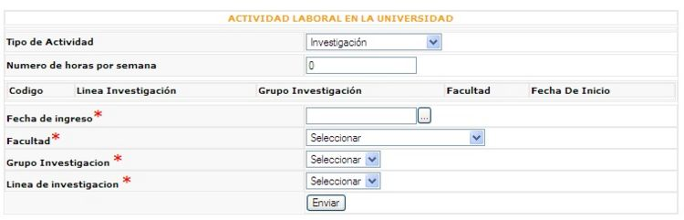
- Al elegir el tipo de actividad Proyección social, se presenta un formulario que se debe diligenciar, los campos marcados con asterisco (*), es obligatorio suministrarlos, registrada la información seleccionar el botón Modificar, si requiere eliminar alguna de la información registrada elegir el botón Anular.
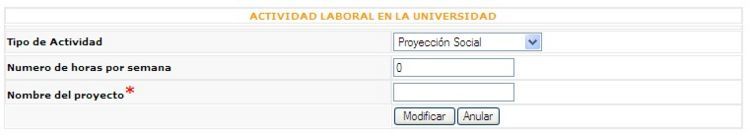
- Al seleccionar tipo de actividad Atención y tutorías, se presenta un formulario que se debe diligenciar, registrada la información seleccionar el botón Modificar, si requiere eliminar alguna de la información registrada elegir el botón Anular.
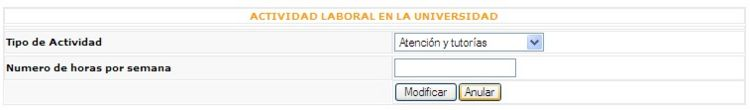
- Al elegir el tipo de actividad Administración Académica, se presenta un formulario que se debe diligenciar, los campos marcados con asterisco (*), es obligatorio suministrarlos, registrada la información seleccionar el botón Modificar, si requiere eliminar alguna de la información registrada elegir el botón Anular.
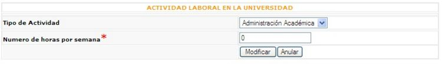
- Al seleccionar tipo de actividad Otras asignaciones, se presenta un formulario que se debe diligenciar, los campos marcados con asterisco (*), es obligatorio suministrarlos, registrada la información seleccionar el botón Modificar, si requiere eliminar alguna de la información registrada elegir el botón Anular.
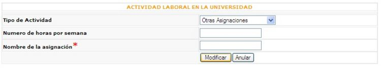
[Inicio] Formación Académica
- Al seleccionar el aspecto Formación Académica, podrá registrar los diferentes tipos de formación académica realizada, Formación Disciplinar, Formación en la docencia, Formación para investigación y Formación General.
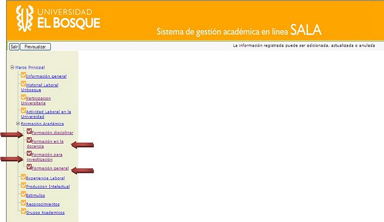
- Al seleccionar la formación académica, se presenta un formulario que se deben diligenciar según el caso, los campos marcados con asterisco (*), es obligatorio suministrarlos, registrada la información seleccionar el botón Modificar.
[Inicio] Formación Disciplinar
- Es aquella que corresponde a la formación en la profesión (No incluya formación en docencia ni en investigación).
- Al seleccionar el botón , podrá registrar la diversa formación disciplinar realizada, cada vez que se incluya un registro, este se visualizará en la parte superior.
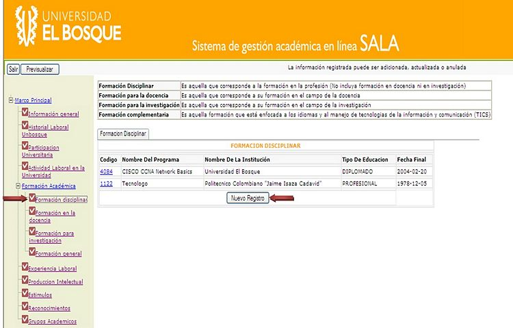
- Al adicionar un nuevo registro debe indicar el tipo de Educación realizada, se presenta un formulario que se debe diligenciar según el caso, los campos marcados con asterisco (*), es obligatorio suministrarlos, registrada la información seleccionar el botón 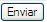. Al seleccionar el icono encontrara información de ayuda.
{kind=link}
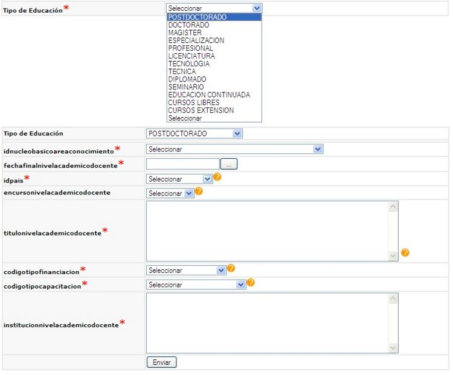
[Inicio] Formación en la Docencia
- Es aquella que corresponde a su formación en el campo de la docencia.
- Al seleccionar el botón , podrá registrar la diversa formación en la docencia realizada, cada vez que se incluya un registro, este se visualizará en la parte superior.
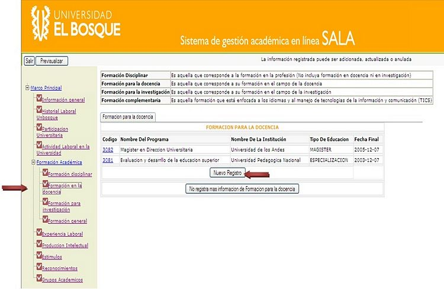
- Al adicionar un nuevo registro debe indicar el tipo de Educación realizada, se presenta un formulario que se debe diligenciar según el caso, los campos marcados con asterisco (*), es obligatorio suministrarlos, registrada la información seleccionar el botón . Al seleccionar el icono encontrara información de ayuda.
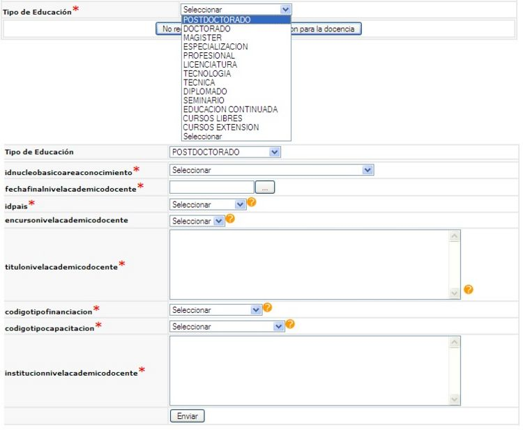
- Si no registra más información para la docencia, seleccionar el botón 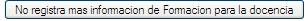
[Inicio] Formación para Investigación
- Es aquella que corresponde a su formación en el campo de la investigación.
- Al seleccionar el botón , podrá registrar la diversa formación para la investigación realizada, cada vez que se incluya un registro, este se visualizará en la parte superior.
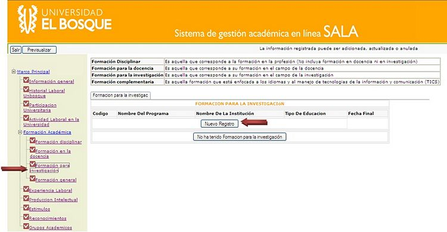
- Al adicionar un nuevo registro debe indicar el tipo de Educación realizada, se presenta un formulario que se debe diligenciar según el caso, los campos marcados con asterisco (*), es obligatorio suministrarlos, registrada la información seleccionar el botón . Al seleccionar el icono encontrara información de ayuda.
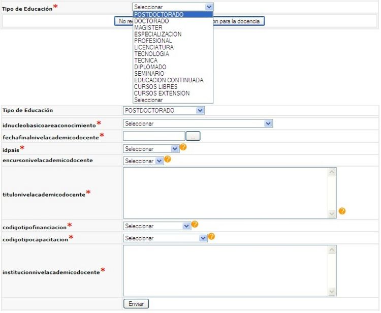
- Si no registra más información para la docencia, seleccionar el botón 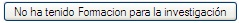
[Inicio] Formación General
- Es aquella formación que está enfocada a los idiomas y al manejo de tecnologías de la informaciín y comunicaciín (TICS).
- Al seleccionar el botón , podrá registrar la diversa formación general realizada, cada vez que se incluya un registro, este se visualizará en la parte superior.
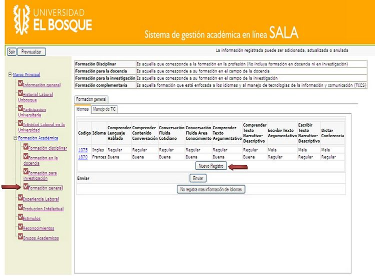
- Al adicionar un nuevo registro debe indicar el tipo de Educación realizada, se presenta un formulario que se debe diligenciar según el caso, los campos marcados con asterisco (*), es obligatorio suministrarlos, registrada la información seleccionar el botón . Al seleccionar el icono encontrara información de ayuda.
{kind=link}
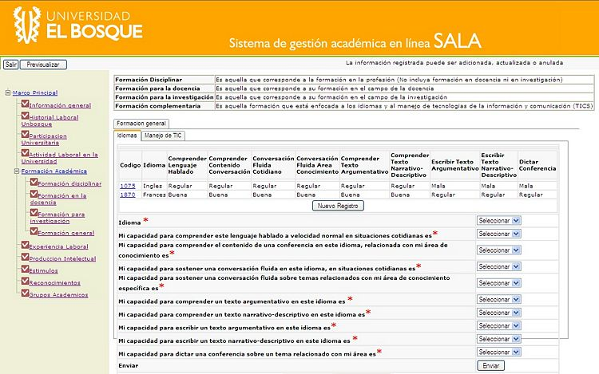
- Si no registra más información de idiomas, seleccionar el botón 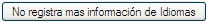
- Para el registro de manejo de tecnologías de la información y comunicación (TICS), debe seleccionar de la lista las que considere que maneja.
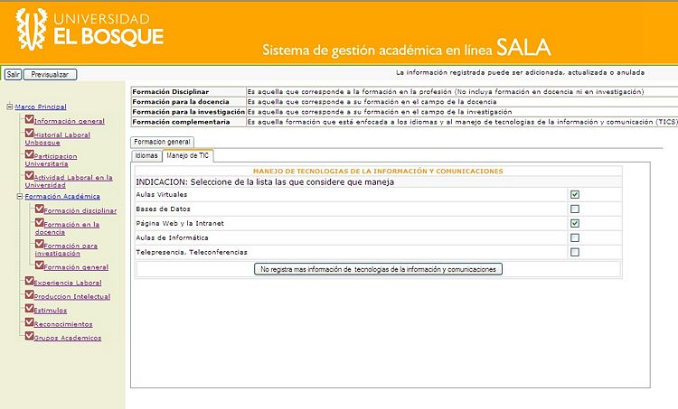
- Si no registra más información de manejo de TICS, seleccionar el botón 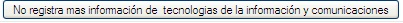
[Inicio] Experiencia Laboral
- Al seleccionar la opción Experiencia Laboral, y seleccionar el botón , podrá registrar las diversas actividades laborales realizadas en diferentes entidades o empresas diferentes a la Universidad, cada vez que se incluya un registro, este se visualizará en la parte superior.
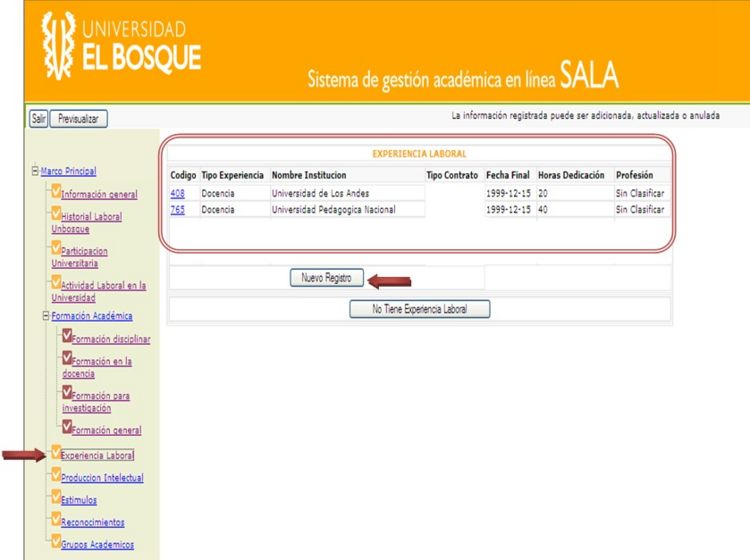
- Al adicionar un nuevo registro debe indicar el tipo de experiencia Docencia u otros empleos.
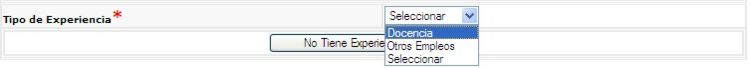
- Al elegir el tipo de experiencia Docencia, se presenta un formulario que se debe diligenciar, los campos marcados con asterisco (*), es obligatorio suministrarlos, en los campos tipo de área de conocimiento y área de conocimiento, se presenta una lista de la cual puede escoger el área de la misma, registrada la información seleccionar el botón .
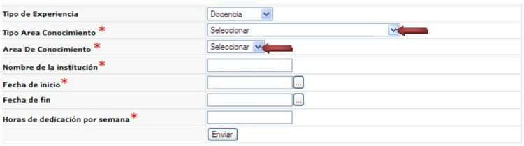
- Al seleccionar el tipo de experiencia Otros Empleos, se presenta un formulario que se debe diligenciar, los campos marcados con asterisco (*), es obligatorio suministrarlos, en el campo actividad, se presenta una lista según la OIT de la cual puede elegir la actividad laboral, la lista puede ser extendida marcando frente a la opción el botón 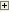 o comprimirla con el botón 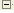; registrada la información seleccionar el botón .
{kind=link}
{kind=link}
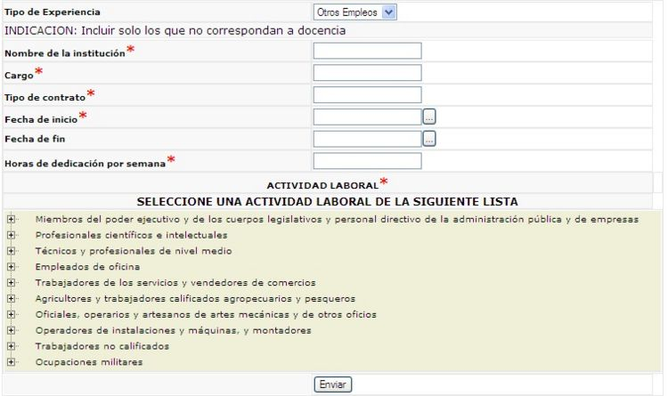
[Inicio] Producción Intelectual
- Al seleccionar la opción Producción Intelectual y escoger el botón , podrá registrar las diferentes producciones intelectuales, cada vez que se incluya un registro, este se visualizará en la parte superior.
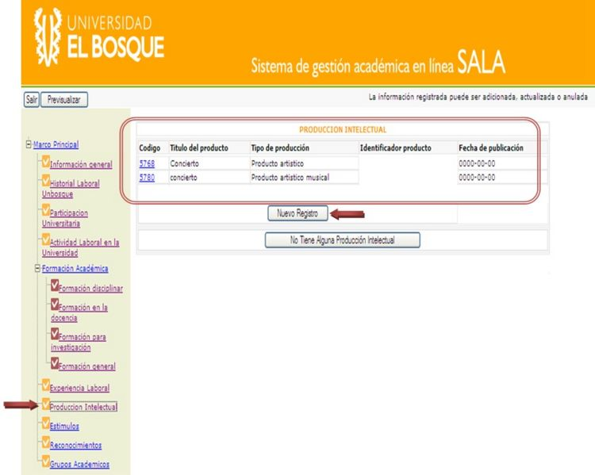
- Al adicionar un nuevo registro debe indicar el tipo de Producción.
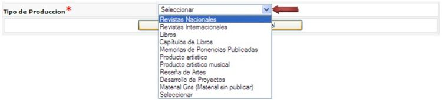
- Al seleccionar tipo de producción, se presenta un formulario que se deben diligenciar según el caso, los campos marcados con asterisco (*), es obligatorio suministrarlos, registrada la información seleccionar el botón . Al seleccionar el icono encontrara información de ayuda.
[Inicio] Revistas nacionales
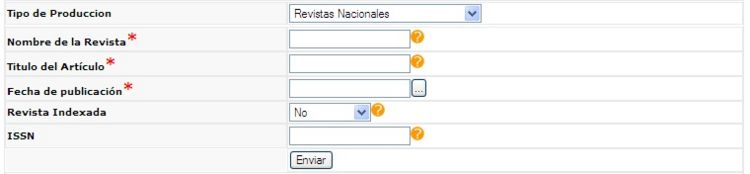
[Inicio] Revistas Internacionales
[Inicio] Libros
[Inicio] Capítulos de Libros
[Inicio] Memorias de Ponencias Publicadas
[Inicio] Producto artístico
[Inicio] Producto artístico musical
[Inicio] Reseña de Artes
[Inicio] Desarrollo de proyectos
[Inicio] Materias Gris (Material sin Publicar)
Si no tiene producción intelectual, seleccione el botón .
[Inicio] Estímulos
- Al seleccionar la opción Estímulos y escoger el botón , podrá registrar las diferentes producciones intelectuales, cada vez que se incluya un registro, este se visualizará en la parte superior.
- Al adicionar un nuevo registro debe indicar el tipo de Estímulo:
- Al seleccionar tipo de estímulo, se presenta un formulario que se deben diligenciar según el caso, los campos marcados con asterisco (*), es obligatorio suministrarlos; en los campos tipo de participación, país, departamento y ciudad, se presentan listas de las cuales puede escoger la información, registrada la totalidad de información seleccionar el botón .
[Inicio] Estudios
[Inicio] Seminario
[Inicio] Conferencia
[Inicio] Congreso
[Inicio] Sin Definir
- Si no ha obtenido algún estimulo, seleccione el botón
[Inicio] Reconocimientos
- Al seleccionar la opción Reconocimientos y escoger el botón , podrá registrar los diferentes reconocimientos obtenidos, cada vez que se incluya un registro, este se visualizará en la parte superior.
- Al adicionar un nuevo registro se presenta un formulario que se deben diligenciar según el caso, los campos marcados con asterisco (*), es obligatorio suministrarlos; en los campos tipo de participación, país, departamento y ciudad, se presentan listas de las cuales puede escoger la información, registrada la totalidad de información seleccionar el botón . Al seleccionar el icono encontrara información de ayuda.
[Inicio] Grupos académicos
- Al seleccionar la opción Grupos académicos y escoger el botón , podrá registrar los diferentes grupos académicos en los que ha o se encuentra participando, cada vez que se incluya un registro, este se visualizará en la parte superior.
- Para visualizar la información digitada con anterioridad en cada ítem, seleccione el botón y a continuación podrá observar su hoja de vida en formato completo. Para imprimir de un clic sobre el campo de firma.
- Para salir de la opción Hoja de vida, seleccione el botón.